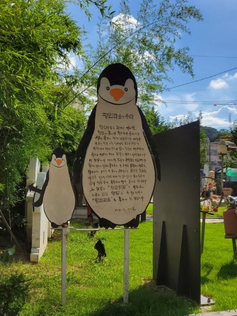
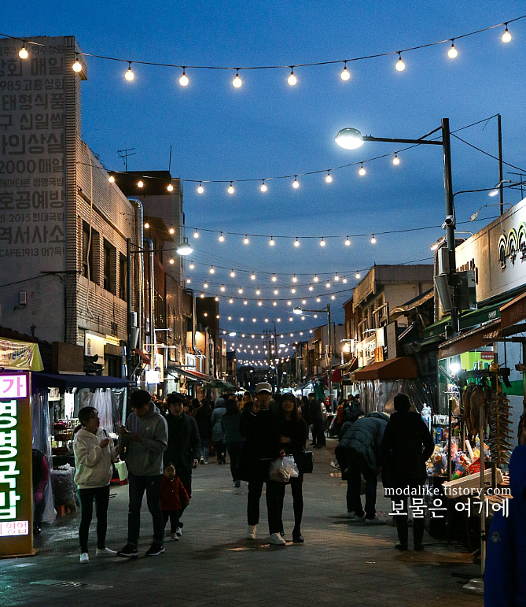
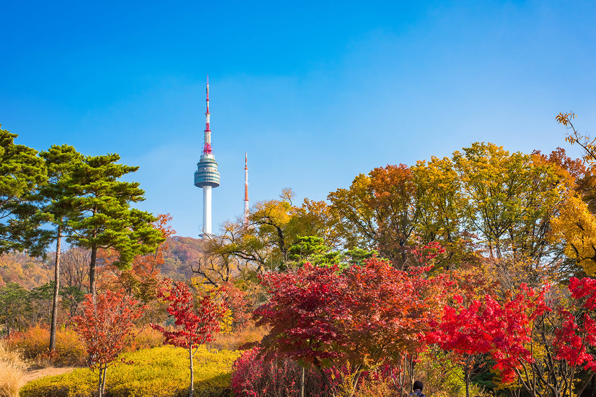

전라남도 중북부에 있는 광역자치단체. 호남 최대도시이며 광주권의 수부도시이다. 광주학생항일운동의 도화선이었고, 4.19 혁명, 5.18 민주화운동, 6.10 민주 항쟁이 일어나는 등 한국 근현대사에 굵은 획을 남긴 도시이며 이 때문에 아시아인권위원회와 아시아법률자원센터가 홍콩에 있다가 이곳으로 이전했다. 세계인권도시포럼 또한 광주에서 열렸다.
추천!

펭귄마을
양림동 주민 센터 뒤에 펭귄모양의 이정표를 따라 좁은 골목길을 들어가면 70,80년대 마을이 전시장으로 변모하고 있다. 무릎이 불편한 어르신이 뒤뚱뒤뚱 걷는 모습이 펭귄 같다고 하여 이름 지어진 마을이다.
추천!

청춘발산마을
'청춘발산마을'은 광주에 남아있는 달동네의 벽화와 희망적인 문구로 재탄생햇다. 과거 방직공장에서 일하던 사람들이 모여 살던 가난한 동네였고, 양학선 선수가 자란곳으로도 유명하다.
추천!

남산 타워
‘남산서울타워’는 효율적인 방송전파 송수신과 한국의 전통미를 살린 관광 전망시설의 기능을 겸비한 국내 최초의 종합전파 탑으로 방송문화와 관광산업의 미래를 위해 건립되었습니다.
추천!
남산 타워
‘남산서울타워’는 효율적인 방송전파 송수신과 한국의 전통미를 살린 관광 전망시설의 기능을 겸비한 국내 최초의 종합전파 탑으로 방송문화와 관광산업의 미래를 위해 건립되었습니다.